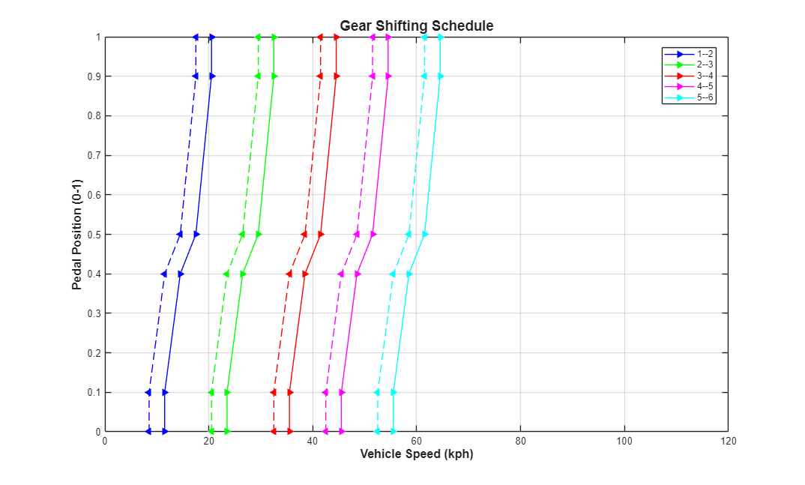
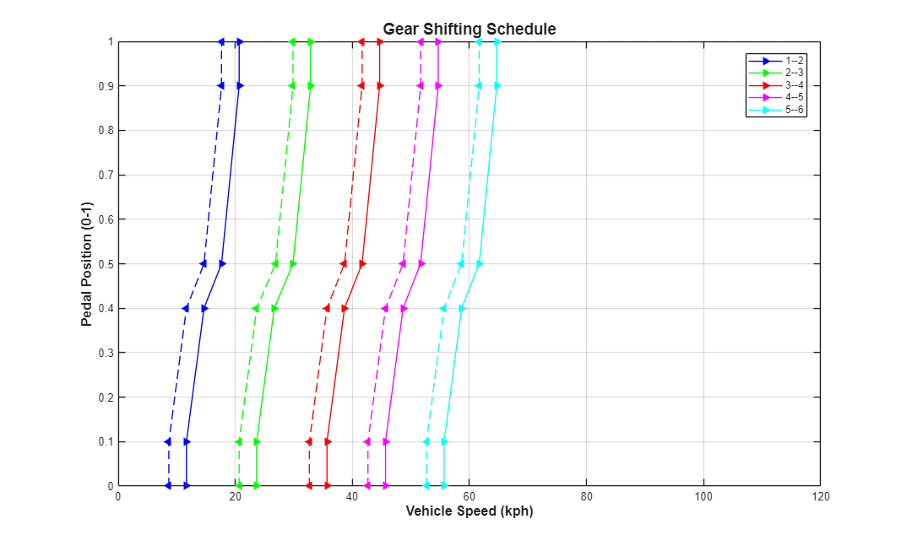

Dual Clutch Transmission - Optimization, 20 Parameters, patternsearch, Series Tests
This example shows a vehicle with a five-speed automatic dual-clutch transmission. The transmission controller converts the pedal deflection into a demanded torque. This demanded torque is then passed to the engine management. The pedal deflection and the vehicle speed are also used by the transmission controller to determine when the gear shifts should occur. Gear shifts are implemented via the two clutches, one clutch pressure being ramped up as the other clutch pressure is ramped down. Gear pre-selection via dog clutches ensures that the correct gear is fully selected before the on-going clutch is enabled.
The script below uses an optimization algorithm to find shift map that maximizes fuel economy. The shift map is parameterized with 20 parameters. The tests are run sequentially on a single core so we can capture the results of each test and animate the evolution of the shift map.
Contents
Setup Optimization
Setup model
### Searching for referenced models in model 'Dual_Clutch_Trans'. ### Total of 1 models to build.
Run optimization using parallel computing
Iter Func-count f(x) MeshSize Method
0 1 0.341992 0.05
1 47 0.341934 0.1 Successful Poll
2 93 0.341831 0.2 Successful Poll
3 100 0.341457 0.4 Successful Poll
patternsearch stopped because it exceeded options.MaxFunctionEvaluations.
Elapsed Sim Time = 405.8716
